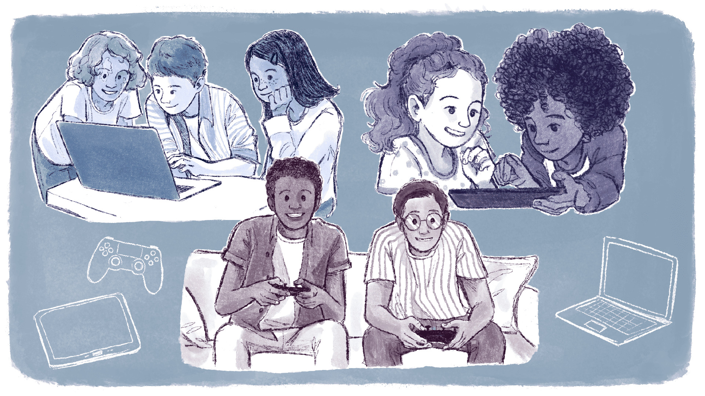

Alfabetização e letramento digitais
Agora já podemos definir a alfabetização digital. Quem nos ajuda com isso é Isabel Frade (2014), com o verbete Alfabetização digital do Glossário CEALE – termos de Alfabetização, Leitura e Escrita para educadores. Para a autora, a alfabetização digital se refere, usualmente, a
“um tipo de aprendizado da escrita que envolve signos, gestos e comportamentos necessários para ler e escrever no computador e em outros dispositivos digitais”
Como o hipertexto agrega som, imagem e áudio, a alfabetização digital implica a aquisição não apenas do sistema alfabético, mas de uma articulação desses elementos com o sistema ideográfico. Além disso, os gestos e os comportamentos relacionados à utilização dos aparatos digitais também fazem parte da alfabetização digital, pois exigem um aprendizado para que a pessoa possa ler e escrever utilizando tecnologias.
Em outras palavras, da mesma forma que aprendemos como segurar um lápis e o quanto de força devemos aplicar para escrever sem furar o papel, é preciso que as pessoas aprendam como utilizar um mouse, um teclado ou quando dar um ou dois cliques em algum ícone ou link.
Para refletir: o processo de alfabetização digital
Conforme foi conversado anteriormente, nossas lembranças sobre a alfabetização nos remetem imediatamente ao ambiente escolar. Busque lembrar de sua alfabetização digital:
- Você saberia responder como aprendeu o que representa cada ícone do celular ou da tela do computador?
- Ou como navegar em sites que acessou pela primeira vez?
- Ou, ainda, como saber que uma figura na tela pode trazer maiores informações, levar a outros sites, tocar uma música, enfim, que possui links que lhe permitem interagir de diferentes formas com o texto no qual iniciou a leitura?
Em relação a essa aprendizagem de gestos e comportamentos para uma alfabetização digital, é interessante que você pense nas dificuldades enfrentadas pelas pessoas que cursam a educação de jovens e adultos em cursos de EPT, especialmente as que não possuem o ensino fundamental concluído:
- Quais dificuldades se assemelham ao processo de alfabetização?
- Como os contextos e vivências podem influenciar essas dificuldades?
- Como essas dificuldades podem afetar a EPT, seja na gestão, seja em sala de aula? Como lidar com elas?
Lembre-se de registrar suas reflexões no Memorial e/ou seguir as orientações do seu tutor!
Segundo Frade (2014), a alfabetização digital geralmente ocorre por meio de jogos, brinquedos e aplicativos: em suma, a partir da prática social com os dispositivos digitais disponíveis, e, neste ponto, nos aproximamos do conceito de letramento digital. No entanto, seguindo a mesma estratégia que utilizamos para entender a alfabetização digital, vamos compreender primeiro do que se trata o letramento.

Título: Alfabetização digital a partir da prática social
Fonte: Prosa (2024).
Para tanto, pediremos novamente a ajuda de Soares (2002). A autora nos explica que letramento é
“o estado ou condição de indivíduos ou de grupos sociais de sociedades letradas que exercem efetivamente as práticas sociais de leitura e de escrita, participam competentemente de eventos de letramento”
Nesse sentido, letrar vai além de alfabetizar, pois abarca a aprendizagem acerca dos usos sociais da leitura e da escrita.
Dessa maneira, o processo de alfabetização permite que as pessoas tenham acesso à sua cidadania e usufruam dos bens culturais das sociedades grafocêntricas, isto é, aquelas (como a nossa) em que a escrita tem papel central. Por sua vez, é somente pelo letramento que as pessoas conseguem fazer o uso adequado da leitura e da escrita nessas sociedades.
Agora que já compreendemos o que é letramento, pensemos no letramento digital.
Para Carla Coscarelli e Hércules Corrêa (2018), letramento digital se refere às práticas sociais de leitura e escrita
“que se desenvolvem atualmente em ambientes digitais como computadores, tablets, celulares e outros equipamentos que nos dão acesso a redes de comunicação digital como a internet” (Coscarelli; Corrêa, 2018, p. 385).
Os autores explicam que o letramento digital envolve três aspectos: a navegação, a leitura e a comunicação em ambientes digitais.
- Por meio da navegação, as pessoas procuram e selecionam informações que consideram importantes. Para tanto, utilizam ferramentas de busca e palavras-chaves que estejam relacionadas aos seus objetivos e interesses;
- Já a leitura diz respeito à compreensão mais aprofundada dos materiais que foram selecionados, os quais serão multimodais, pois combinarão diferentes linguagens (sons, gráficos, imagens, textos) e, ainda, a avaliação sobre a credibilidade da autoria e da fonte das informações encontradas;
- Por fim, a comunicação diz respeito tanto à postagem de respostas quanto à produção de conteúdos em redes sociais, sites ou blogs (Coscarelli; Corrêa, 2018) e, conforme vimos no capítulo anterior, se dá de maneira multidirecional na cultura digital.
A partir das explicações de Coscarelli e Corrêa (2018), entendemos que o letramento digital exige das pessoas habilidades semelhantes às que são necessárias ao letramento de modo geral.
No entanto, como a cultura digital nos possibilita diferentes espaços para a produção, reprodução e disseminação da leitura e da escrita, o letramento digital se faz imprescindível para a participação crítica e ética em práticas sociais de leitura e escrita em ambientes e dispositivos digitais – especialmente num momento em que a IA está tão presente.
Em síntese, o letramento digital é necessário para que as pessoas possam comunicar-se em situações diversas e com finalidades variadas, atuando como leitoras, produtoras, autoras e divulgadoras na cultura digital e, nesse sentido, ele se integra aos múltiplos letramentos que caracterizam a sociedade contemporânea.
O que é multiletramento?
O primeiro deles é a “multiplicidade de linguagens, semioses e mídias envolvidas na criação de significação para os textos multimodais contemporâneos” (Rojo, 2013, p. 14, grifo da autora). Já o segundo diz respeito à “pluralidade e a diversidade cultural trazidas pelos autores/leitores contemporâneos a essa criação de significação” (Rojo, 2013, p. 14, grifo da autora).
Como estamos vendo ao longo deste capítulo, em seu artigo publicado em 2002 intitulado Novas Práticas de Leitura e Escrita: Letramento na Cibercultura, Magda Soares explorou a interseção entre alfabetização, letramento e cultura digital, enfatizando não haver apenas um único tipo de letramento, mas sim “letramentos” – no plural –, considerando os efeitos sociais, cognitivos e discursivos das tecnologias digitais e da escrita.
Convidamos você a assistir alguns trechos da live Alfabetização e Letramento: na cultura do papel e na cultura das telas com a Profa. Dra. Magda Soares, em especial o trecho que tem início no minuto 45:55 até 1:01:00.
Esta live foi organizada pelo grupo Gellite, da Universidade Federal de Alagoas, na qual a autora relaciona as ideias trabalhadas em seu artigo às temáticas contemporâneas e emergentes.
A gravação foi realizada em março de 2021 durante a pandemia do coronavírus, uma das últimas aparições da renomada educadora e pesquisadora.
Titulo: Alfabetização e Letramento: na cultura do papel e na cultura das telas
Fonte: Gellite UFAL (2021).